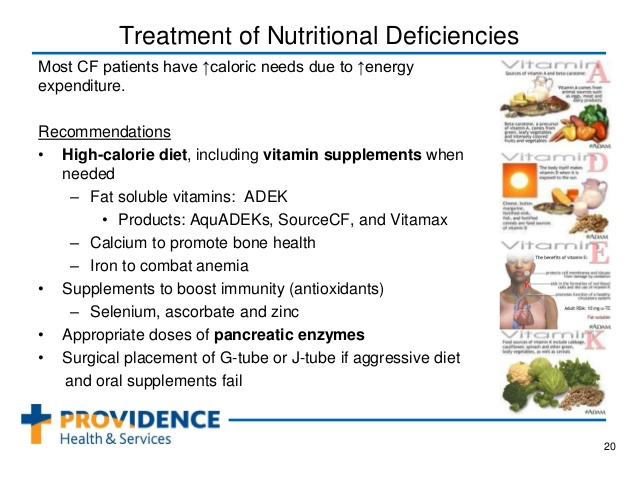

All people with CF require close and regular evaluation of growth, nutritional status and body composition throughout their lives. Reliable and sequential measurements of growth and nutritional status are an essential part of the clinical assessment of health status in CF. Regular assessment will help to ensure that any deterioration in nutritional status is detected early, so that nutrition interventions can be initiated.
